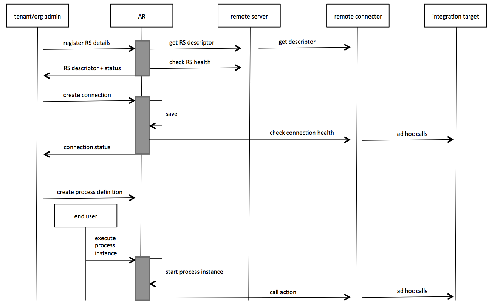

Rx Remote Server SPI API documentation
Principles
This document describes the SPI, which Rx remote server/connectors need to implement.
A remote server exposes an SPI (i.e. an API consumed by AR). The SPI includes:
- descriptors i.e. metadata about the remote server and its contents
- remote connectors and their actions
Remote connector actions are elementary pieces of functionality that can be used as bricks in AR processes.
Typical Interaction involving a Remote Connector

HTTPS and HTTP
A remote server either works entirely on HTTP or HTTPS. Production deployments should use HTTPS. HTTP is supported for development purpose.
Self-signed SSL certificates are not supported yet.
Literal Types and Formats
Unless stated otherwise, the remote server API uses JSON to transfer data.
Authentication
A remote server may use HTTP basic authentication to protect all of its end-points. When used:
- Every call from the platform will contain the
AuthorizationHTTP header. The remote server should not expect the platform to trade the authorization challenge against a cookie or a token. - The remote server descriptor should be protected by the same authentication.
HTTPS would normally be used concomitantly with basic auth in order to provide reasonable security.
Error Handling
As much as possible, a remote server should attempt at following HTTP conventions when it comes to HTTP status codes. If a status code has a special meaning for the platform, it will be stated in the specification of the corresponding end-point.
A remote server should return error details as a JSON payload with the following format:
{
"messageType": "ERROR",
"messageText": "cost should be greater than price",
"moreInfo": "..." // e.g. stack trace
}
Remote Server Descriptor
Remote server descriptors describe the connectors and connection actions exposed by a remote server.
Example:
{
"connectors": [
{
"name": "BMC Atrium Orchestrator", // for display
"type": "com.bmc.bao", // unique among all connectors
"path": "bao", // URI path relative to remote server root
"connectionInstanceProperties": [ ... ],
"actions": [
{
"name": "submitRequest", // immutable key of the action
"displayName": "Submit Request",
"path": "submitrequest", // URI path relative to connector path
"inputs": [ ... ],
"output": { ... }
},
...
]
}
]
}
Connector and Action Names
A remote connector is identified by its "type" attribute across all connectors known to an AR server, whether it is in-app or deployed on any remote server. We suggest to follow a reverse domain name notation in order to avoid conflicts.
Example:
com.example.myconnector
Action names are unique per connector.
Connection Instance Properties
Example:
{
"name": "host",
"displayName": "Server Host",
"helpText": "server name or IP address",
"type": "String",
"required": true,
"defaultValue": null
},
{
"name": "port",
"displayName": "Server Port",
"type": "Integer",
"required": false,
"defaultValue": 8080
},
{
"name": "login",
"type": "String",
"required": true
},
{
"name": "password",
"type": "EncryptedString",
"required": false
}
Supported property types: String, Integer, EncryptedString. EncryptedString values are still passed to the connector as plain text, but are stored encrypted in AR.
Action Input Descriptors
Example:
{
"name": "action name",
"path": "com.example.myconnector",
"inputs": [
{ "name": "itemId", "type": "String", "required": "true" },
{ "name": "quantity", "type": "Integer", "required": "false" }
]
}
Action Output Descriptor
Example:
{
"name": "action name",
"path": "com.example.myconnector",
"inputs": [ ... ],
"output": { "type": "String" }
}
Input/Output Types
| input/output type | JSON transfer type and value examples |
|---|---|
| any | null value:null |
| String | string"a value" |
| Integer | integer123 |
Remote Server
Connector
Executes the anAction action. The URL is:
remote server URI + connector path + action path
All action end-points implement the same API pattern. They just have different paths.